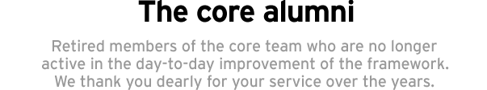
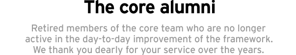

Jamis Buck (minam) is a repentant Java programmer who never really enjoyed Java, but who finally found web-programming joy in Rails. He is an avid Ruby programmer, having contributed several packages to the community (including Net::SSH, Net::SFTP, Syntax, sqlite-ruby, sqlite3-ruby, SwitchTower and others). He is currently employed at 37signals, working from his home in Provo, Utah. He and his wife Tarasine have been married for 8 years. They have two children.
Marcel Molina Jr. (noradio) is a language enthusiast who went from being a literature major to a programmer. In his transition from natural language to machine language he found Ruby an elegant balance of dynamic, pragmatic and “humane”. And then came along Rails… Marcel is a software consultant and tumblelogs at Projectionist.
Nicholas Seckar (ulysses) is a student and software engineer living in Toronto, Canada. Nicholas has been contributing to Ruby and Rails since Fall 2004, with numerous bug fixes and new features such as Routing. He has been a developer on Measure Map since August 2005. He is currently completing his undergraduate degree at the University of Toronto, while also working for Google in their Toronto engineering department.
Florian Weber (csshsh) began using Rails in early 2004. Since then he’s played an integral role in several Rails-based projects. He developed the CMS and webshop for bellybutton.de, and later worked on Odeo. In Spring 2006 he began working on Twitter as lead developer. At the moment, he is living in Berlin, Germany and working as a software developer.
Sam Stephenson (sam-) is a fan of dynamic languages who found Ruby just six months before Rails’ first release. In February of 2005, he released the Prototype JavaScript library, which provides the foundation for Ajax support in Rails. Sam lives in Chicago, works for 37signals, and tumblelogs on Projectionist.
Scott Barron (htonl) was set to swear off computers forever and become a plumber when Rails was released. He immediately found salvation in the warm embrace of Ruby and has never looked back. He currently practices Rails by working for EdgeCase.
Thomas Fuchs (madrobby) is a Web and JavaScript guru from Vienna, Austria. He is the author of script.aculo.us, a cross-browser JavaScript User Interface framework and he keeps busy as a core team member of the Prototype JavaScript framework, used by thousands of websites. He’s available for hire as a consultant for rich web user interfaces and JavaScript.
Tobias Lütke (xal) encountered Rails while struggling to find technology for his new company. Once found, he quickly ported the bits and pieces of his code over to Ruby which later became the first rails based e-commerce store “Snowdevil”. Tobi is a partner at JadedPixel and is frantically working on Shopify which is the continuation of the Snowdevil code base. Over time, Tobi released many open source projects such as Typo, Hieraki, and Liquid.
Rick Olson (technoweenie) blames Ruby on Rails for destroying his ASP.Net career. He's been using Rails actively since 2005 and is now working on making issue tracking enjoyable with Lighthouse. He's also released several open source projects, such as Mephisto, Beast, along with numerous plugins.